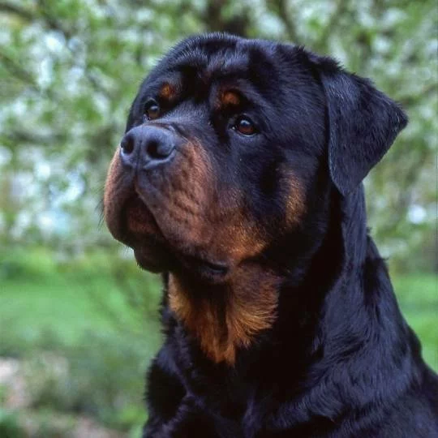

A raça de origem alemã e de ampla reputação mundial foi oficialmente reconhecida em 1966.
Voltar à página inicial.
Necessitam receber dieta com alta energia, que promova manutenção da massa magra,
e que contenha nutrientes que favoreçam tanto a saúde de ossos e articulações como também a saúde do coração.